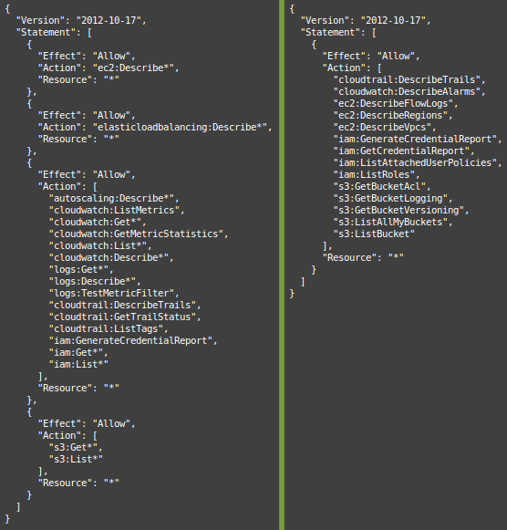
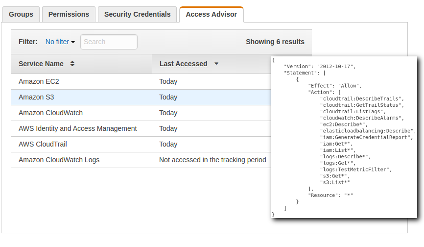

By: Alex McCormack @amccormack
I recently cleaned up the README for ThreatPrep, adding better installation instructions, explanations of code, and an example IAM policy users could use to run the tool. I quickly made the policy by copying the ReadOnlyAccess policy (arn:aws:iam::aws:policy/ReadOnlyAccess) and then stripping obvious actions that belonged to services ThreatPrep didn’t need. The resulting policy worked, but it still felt too permissive, so I spent some time today narrowing it down as much as I could. You can see the before and after in the image below:

Tailoring the policy took a bit of time, but I discovered a few tips that might make crafting the next policy a bit easier.
Just like code, policies are a lot easier to maintain and troubleshoot when they are cleanly written. I found it easier to read when I combined the statements and alphabetized the actions. Statements can be combined without any problems so long as the Effect and the Resource are the same.
After combining the actions into a single statement, I copied the block of actions into a text file and sorted it using the sort command in Linux.
If you compare the two policies above, you’ll note that the one on the right is much easier to read. Not only does reducing the statements cut out the clutter of extra curly braces, but combining and sorting makes it much easier to notice an action that doesn’t belong.
The first iteration of the policy used the action ec2:Describe*. But it turns out, there are more than 62 actions that currently match this wildcard. Enumerating the actions you actually need instead of using a wildcard not only makes it easier to determine the explicit Actions granted, but it also prevents an accidental permission grant if Amazon were to add another action matching the ec2:Describe* name.
However, there is currently a limit of 5,120 characters for a managed policy. If you are running into this limit, using the wildcard to reduce space makes sense.
When crafting a new policy for a tool, it can get confusing if you don’t create a separate user to test against. First, you want a user that has only the allowed actions specified in the policy. You don’t want actions granted or denied by other policies to affect your testing. Having a test user will also make it easier to utilize Access Advisor or to check our CloudTrail logs.
Finally, creating a test user doesn’t do any good if you don’t actually use the credentials for that user when running the test. Using docker is an easy way to isolate accounts, though you may also be able to use named profiles.
When I started looking to narrow the policy, the first place I checked was Access Advisor.

Access Advisor shows the services that a user is granted permission to, and when that service was last accessed by that user. But be aware, AWS states that recent activity usually appears within 4 hours, so it may take some time before you can audit using this tool.
You can use the IAM User Guide to see which Service Name maps with which action. That was how I determined that “Amazon CloudWatch Logs” started with “logs” and not “cloudwatch” and so I could therefore remove all the “logs” actions from my policy.
As pointed out in the AWS Blog, last access refers to the last time an authenticated request was made to that service, regardless of whether or not the user was actually authorized to perform that action. And while Access Advisor can tell you which services you don’t need access to, you’ll need to check the CloudTrail logs if you want to check for access to specific API calls.
If you have CloudTrail set up, and you really should, you can run your application with a more permissive policy, and then audit the EventNames which reveal the APIs being called. In the example below, I created a new user called threatpreppolicytest and then granted that user a more permissive policy. I then downloaded the log files from S3 and filtered out the relevant data with jq.
almac@box ~/Downloads $ cat 114406602329_CloudTrail_us-east-1_20160913* | \
jq -c '.Records[] | { eventName: .eventName, userName: .userIdentity.userName, eventSource: .eventSource }|select(.userName=="threatpreppolicytest")|[.eventSource, .eventName]' | \
sort | uniq
["cloudtrail.amazonaws.com","DescribeTrails"]
["ec2.amazonaws.com","DescribeFlowLogs"]
["ec2.amazonaws.com","DescribeRegions"]
["ec2.amazonaws.com","DescribeVpcs"]
["iam.amazonaws.com","GenerateCredentialReport"]
["iam.amazonaws.com","GetCredentialReport"]
["iam.amazonaws.com","ListAttachedUserPolicies"]
["iam.amazonaws.com","ListRoles"]
["monitoring.amazonaws.com","DescribeAlarms"]
["s3.amazonaws.com","GetBucketAcl"]
["s3.amazonaws.com","GetBucketLogging"]
["s3.amazonaws.com","GetBucketVersioning"]
["s3.amazonaws.com","ListBuckets"]
and comparing that to the policy I had in place:
"cloudtrail:DescribeTrails",
"cloudtrail:GetTrailStatus",
"cloudwatch:DescribeAlarms",
"ec2:DescribeFlowLogs",
"ec2:DescribeRegions",
"ec2:DescribeVpcs",
"iam:GenerateCredentialReport",
"iam:GetCredentialReport",
"iam:ListAttachedUserPolicies",
"iam:ListRoles",
"s3:GetBucketAcl",
"s3:GetBucketLogging",
"s3:GetBucketVersioning",
"s3:ListAllMyBuckets",
"s3:ListBucket"
We could see the following were not used:
However, this method isn’t fool proof. After all, we are comparing APIs being called to actions allowed in a policy statement. And while these match pretty closely, they aren’t necessarily 1-to-1. If I remove the cloudtrail:GetTrailStatus action, ThreatPrep runs just fine. But s3:ListAllMyBuckets is still needed. This is because s3:ListAllMyBuckets is allowing an action, even though there isn’t actually a specific API that aligns to it. Even so, querying the API can be really useful, especially when swapping out wildcards for enumerated actions.
With all the intricacies of IAM Policies, its easy to grab a managed policy and use it without taking a hard look at whether or not the policy is too permissive. And if you’re like me, once you get a policy that works, you don’t often go back and check on them to make sure they are as tight as they could be. But with the tips outlined above, you can ensure your policies are as tight as possible.
Finally, when it comes to ThreatPrep, keeping the Resource of the section wide open with a * is necessary for the tool, but other tools may have more appropriate policies that are tied to a specific resource or tag. For more information on locking down the Resource section, checkout the the SEC305 talk linked in the References section.